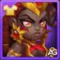

Neste guia, você descobrirá o papel da Oya, suas melhores sinergias de equipe, classe de glifos, como obter suas Pedras da Alma e onde ela se classifica na tier list tanto no combate geral quanto nas batalhas contra a Hidra.
Guia da Oya - Hero Wars Alliance, um jogo desenvolvido pela Nexters.
Oya funciona excepcionalmente bem com causadores de dano crÃtico como Yasmine, Jhu e Ishmael, formando equipes ofensivas de alta pressão. Sua sinergia com Guus melhora a sobrevivência e o controle, enquanto Chabba oferece suporte na linha de frente e distrai os inimigos, abrindo espaço para que os assassinos da retaguarda atuem livremente.
Prioridade de Evolução das Habilidades da Oya - Hero Wars Alliance
Descubra quais habilidades da Oya evoluir primeiro e por quê. Conheça os segredos por trás de seu poder de quebra de escudos e da sinergia de cura com Guus!
Prioridade de Evolução:Alta – Melhora o controle e aumenta os crÃticos para aliados da Natureza, especialmente poderosa quando combinada com Guus e outras equipes da Natureza.
Essa habilidade cura aliados quando causam acertos crÃticos ou quebram escudos. Ela concede cura extra para Heróis da Natureza. Quando combinada com Guus, torna-se ainda mais eficaz graças aos buffs da Pena Dourada dele, que aumentam a chance de crÃtico e os gatilhos de cura.
Descubra quais visuais evoluir primeiro para a Oya em Hero Wars Alliance com base em como eles melhoram seu desempenho em combate e o impacto de suas habilidades.
Visual Padrão
Força +1.365. Cada ponto de Força concede 40 de Vida e 1 ponto extra de Ataque FÃsico se Força for o atributo principal. Este visual aumenta diretamente a sobrevivência e todas as habilidades da Oya, especialmente o escalonamento de dano.
Prioridade de Evolução:Muito Alta – Atributo principal que melhora todas as habilidades ofensivas e defensivas da Oya.

Visual Solar Super
Vida +213.290. Este visual oferece um grande aumento na sobrevivência, especialmente útil em PvP e contra equipes de explosão. Combina bem com os efeitos passivos de cura dela e a sinergia com Guus.
Prioridade de Evolução:Alta – Excelente para durabilidade na linha de frente, mas não aumenta diretamente o dano.
Prioridade de Evolução dos Artefatos da Oya – Hero Wars Alliance
Descubra quais artefatos priorizar para a Oya em Hero Wars Alliance para potencializar sua habilidade Quebradora de Escudos e a sinergia com a equipe nas batalhas.
Prioridade de Evolução:Muito Alta – Ativa com sua principal habilidade e beneficia toda a equipe. Essencial para o desempenho dela nas batalhas.
2º – Artefato de Livro: Código do Guerreiro
Chance de Acerto CrÃtico +2.967, Ataque FÃsico +3.561. Este artefato aumenta o potencial de dano da Oya e a chance de ativar cura e efeitos bônus com acertos crÃticos. É um reforço sólido para suas capacidades ofensivas, especialmente quando combinada com Guus ou outros aliados da Natureza.
Prioridade de Evolução:Alta – Suporta builds baseadas em crÃtico e aumenta o dano total, complementando bem a sinergia das habilidades dela.
Oya possui acesso a dois talismãs poderosos, mas apenas um pode ser equipado por vez. Diferente das skins, onde todos os bônus se aplicam independentemente de qual esteja ativa, apenas o talismã equipado concede seus efeitos bônus. Escolher o certo pode influenciar drasticamente o resultado da batalha. Vamos analisar as opções.
Talismã da Profecia
Atributo Principal: Força +2000 – Como principal atributo da Oya, a Força aumenta tanto sua Vida quanto seu Ataque FÃsico, sendo um bônus base valioso.
Melhor Uso: Ideal para composições de equipe focadas em crÃticos com sinergia de Natureza, especialmente quando você quer que a Oya se sustente sozinha enquanto causa dano consistente com acertos crÃticos.
Talismã da Profecia, Hero Wars Alliance.
Talismã da Guerreira
Atributo Principal: Ataque FÃsico +8000 – Um aumento direto e massivo no poder ofensivo da Oya, amplificando seu dano em todas as habilidades, especialmente Quebradora de Escudos e Avassaladora.
Bônus de Rerrolagem (Combinado): Destruição +13.200 – Destruição aumenta todo o dano causado a inimigos com pouca vida, tornando a Oya muito mais letal ao finalizar oponentes. O bônus afeta dano FÃsico, Mágico e Puro, sendo versátil para qualquer formação de equipe.
Qual Devo Escolher? Se você estiver construindo a Oya com foco em consistência de crÃticos e sinergia com Guus ou outros heróis da Natureza, escolha o Talismã da Profecia. Se quiser que a Oya cause dano explosivo e finalize inimigos rapidamente, especialmente no PvP, o Talismã da Guerreira lhe dará vantagem. Equipe com sabedoria — sua escolha pode mudar o rumo da batalha.
Elmir se move para a retaguarda após se clonar, causando dano à distância de forma segura. Seu artefato de arma aumenta a penetração de armadura da Oya. Em equipes com Dorian, ele ganha bônus de dano crÃtico, criando uma sinergia perfeita com a cura baseada em crÃtico da Oya.
Guus aumenta a chance de acerto crÃtico e cura aliados com as Penas Douradas. Oya se beneficia imensamente desses bônus, ativando mais acertos crÃticos e efeitos de cura com Investida Brutal. Uma das melhores sinergias para composições focadas em crÃticos constantes.
Jhu causa mais dano quanto menor for sua Vida. Os efeitos da Oya de quebrar escudo e drenar energia ajudam a enfraquecer os alvos, permitindo que Jhu finalize os inimigos mais rapidamente. Ambos se beneficiam de formações centradas em acerto crÃtico.
Ishmael se destaca em equipes com foco em acerto crÃtico. O bônus passivo de Oya para chance crÃtica complementa seu estilo de jogo explosivo. Em batalhas mais longas, a escalada crÃtica combinada dos dois pode dominar as linhas de frente inimigas.
Uma vez por batalha, Astaroth pode ressuscitar um aliado e quando Oya usa sua habilidade Caça ela elimina os inimigos rapidamente, e Astaroth os revive com energia cheia.
Seja no ataque ou na defesa, Oya exerce forte pressão contra tanques com escudo e inimigos que dependem de energia. Quando usada com os aliados certos, ela se torna peça central nas formações vencedoras.
Você gostou do nosso Guia da Oya para Hero Wars Mobile? Há algo que não entendeu ou gostaria de sugerir mudanças? Convidamos você a se juntar à nossa sessão de comentários na página do Alexandre Games Blog. Não hesite em expressar sua opinião, clarificar suas dúvidas e compartilhar sua sugestões. Clique no botão abaixo para começar:


 Fafnir Hero Wars Mobile
Fafnir Hero Wars Mobile  Guia do Tristan Hero Wars Mobile
Guia do Tristan Hero Wars Mobile